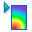
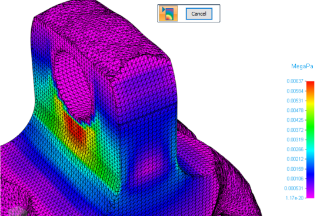
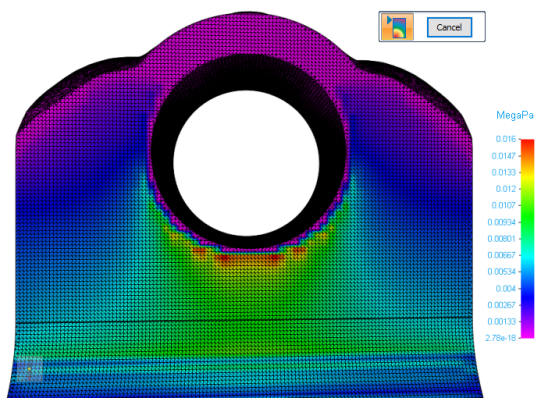
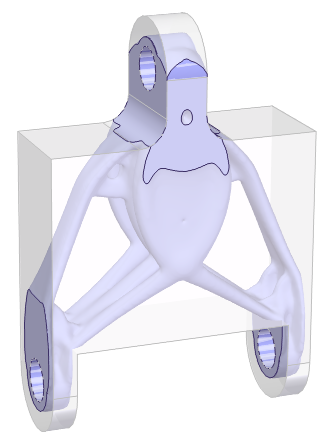
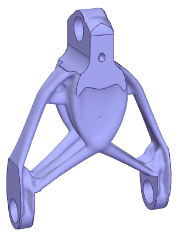
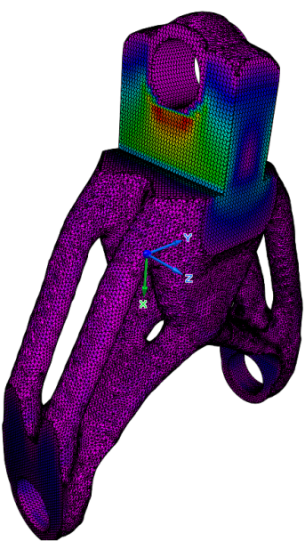

Show stress
Reviewing the results of a structural optimization is part of the Generative Design workflow.
-
After you process the study using the Generate command, select the Generative Design tab→Generate group→Show Stress command

to show the stress contours of the optimized shapes.
Study Quality=5, Mass Reduction=50 percent

Study Quality=275, Mass Reduction=75 percent

The facet body is part of the study object and does not exist in the part document as a feature.
When the allowable stress is exceeded, you will need to decrease the mass reduction percentage and generate the optimization again until the allowable stress is within the desired range.
For other mitigation options, see the following help topics:
Reviewing the stress results
Stress results include the following:
-
The original design space model as well as the optimized facet body model. The design space is shown in gray. You can turn this on or off by clearing the Design Bodies check box in PathFinder.


-
A stress component plot, which graphically depicts the stresses on the facet body by applying color to the results.
-
Areas of lower stress are indicated by the green-to-purple color range.
-
Areas of higher stress are indicated by the yellow-to-red color spectrum.

-